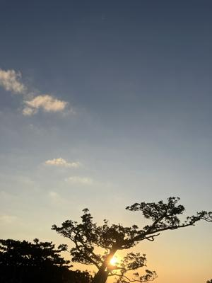
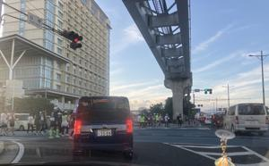
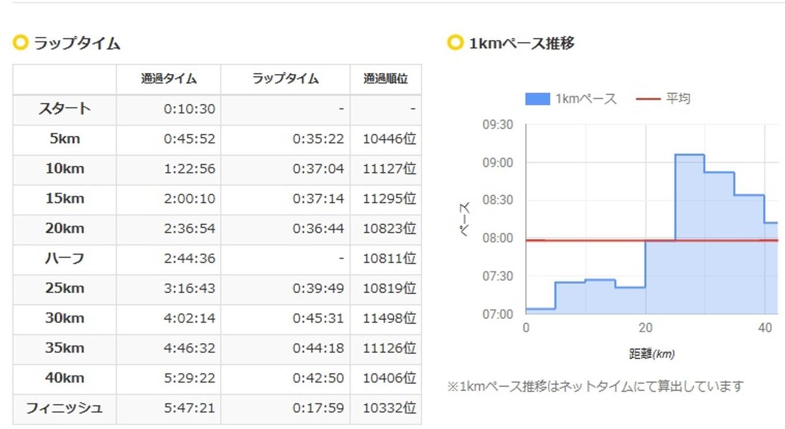

うるがいの話 ある日
最新: 第３９回NAHAマラソン【うるがいの話 ある日】とは 一日だけのプログです
『うるがいの話』の最新一日だけのプログで、通信料が少なく経済的だ。カニの画像をクリックすると全ての日付が載る『うるがいの話』サイトを表示します
|
|
【うるがいの話】 うるがい(ｳﾙｶﾞｲ urugai)とは、『もずくがに』の名前でとても大きくなります。 |
|---|---|
|
|
【カミマヤーの話】 猫のことを方言でマヤーといいます。カミマヤー（kamimayaa）とは、神の猫のことです。 |
|
【たながぁの音楽】 たながぁ（ﾀﾅｶﾞｰ tanagaa）とは手長えびのことで、何種類かあり大きいのは車 エビぐらいになります。 |

|
【ぶながぁの話】 ぶながぁ(ﾌﾞﾅｶﾞｰ bunagaa)とは、赤い髪の毛、赤い身体、そして身長は１ｍ２０ｃｍ ぐらい、川の蟹を食べているの目撃された。場所は沖縄県国頭郡大宜味村のと ある村僕の隣近所に住んでいる爺さんから、聞いた話です。 |
|
|
【ギーマの話】 ギーマ(giima)とは、山原の里山に咲くスズランに似た、 花を付けます。実は食べられます、 気が付くと口の周りが紫になっています。 |
2025年12月07日 (日）第３９回NAHAマラソン
15:12

７時早いから、もっと遅くにしてと言われたので、３０分遅くし
た７時半にコドモを迎えに行った。予想通り道は混んでいた。そ
の昔、１０年以上も仕事をしていたリースビルの所で、降ろす。
その昔は航空会社があったが、ファミリーマートになっていた。

余りにも進みが遅い！、中央車線で止まっていた自動車からラン
ナーが降りた！、オオ。余りにも混んでいるの旭橋から、左折せ
ずその前の交差点で左折した。

５時間４７分で完走した、即ご苦労様さんとラインする。私がナ
ハマラソンで出ていた頃、タチバナさんが同じように走行時間を
モニタしていた。ハーフから、記録が止まっていましたと言われ
た、そう中間地点でギブアップしていたのです。１４時５２分コ
ドモから、『膝が痛い』と返信が届いた。
２万３，８５９人のジョガー、ウーン、少ない！、参加料１万円
